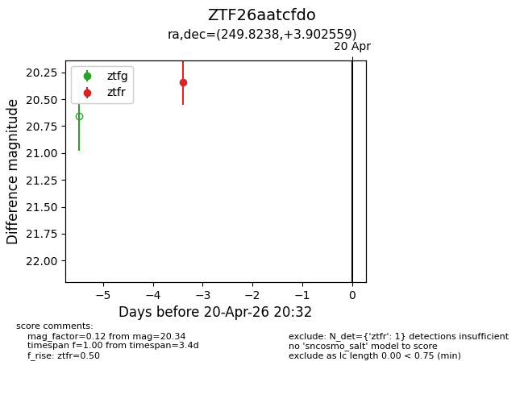
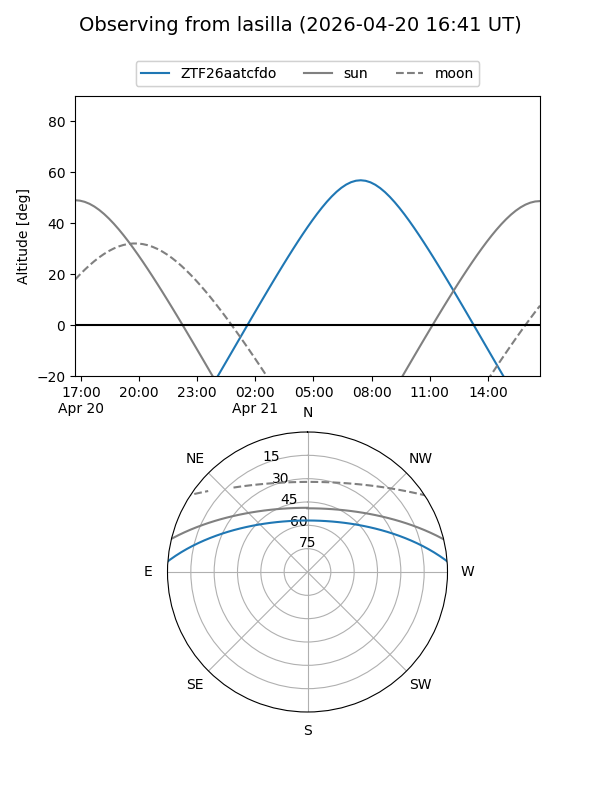
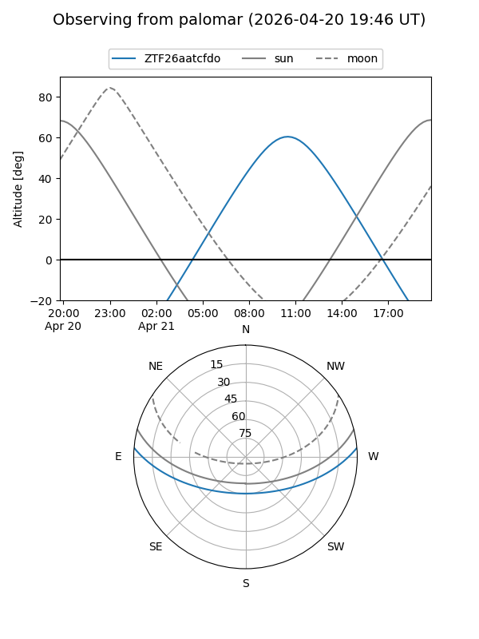
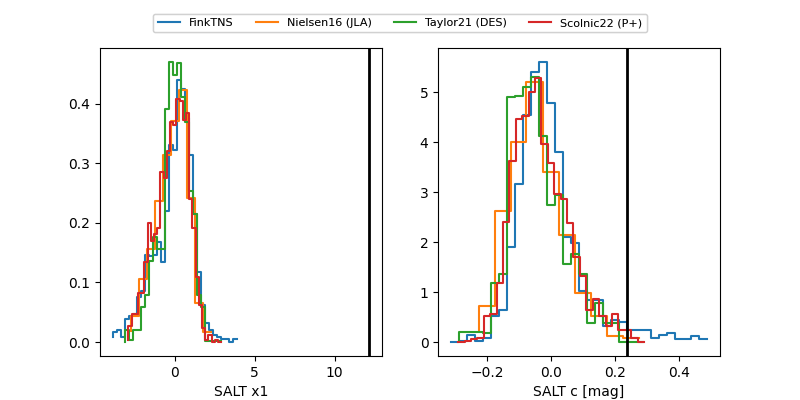

ZTF26aatcfdo
Target ZTF26aatcfdo at 2026-04-20 20:42
Aliases and brokers:
FINK: link
Lasair: link
ALeRCE: link
alt names
ZTF26aatcfdo (ztf,fink_ztf)
Coordinates:
equatorial (ra, dec) = 249.8238,+3.90256
equatorial (HMS+DMS) = 16:39:17.71,+03:54:09.21
galactic (l, b) = (20.3005,+31.00389)
Flags:
Photometry:
last ztfr=20.34
1 ztfr detections
Lightcurve

Visibility


Additional plots
